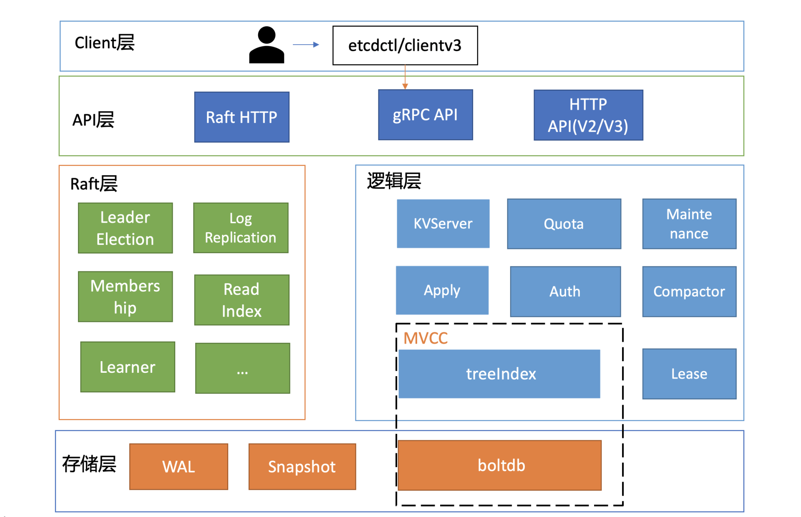
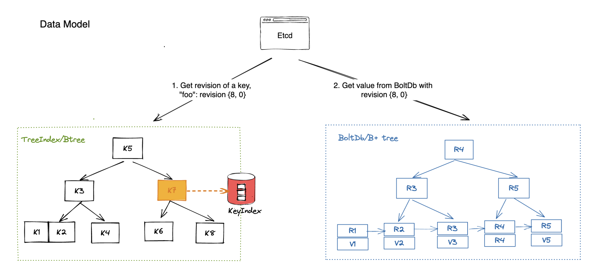
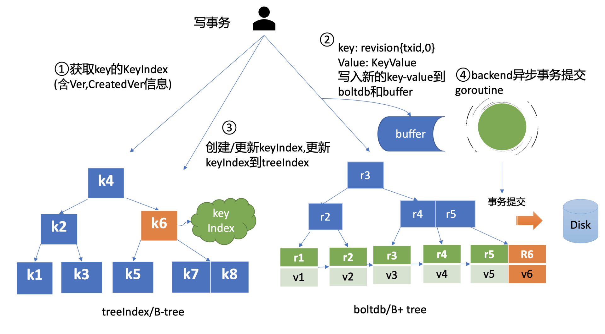

Intro
下面是 etcd 的整体架构：

Raft
etcd 的 Raft 层依靠的是 etcd/raft/v3 实现的，这是 etcd 官方实现的 raft 库，关于该库的细节在之后文章中详细介绍。
MVCC
etcd v3 加入了 MVCC，每个 kv 对都有多个版本，他们靠如下类来维护：
type keyIndex struct {
key []byte // 用户提供的 key
modified Revision // 最新一次修改后的版本
generations []generation // 该 key 产生的所有代
}
type Revision struct {
Main int64 // 主版本号
Sub int64 // 一个事务内修改版本号，初始为 0，随修改次数递增
}
type generation struct {
ver int64 // 对于这代的修改次数
created Revision // 产生这代的版本
revs []Revision // 这代 key 的所有的版本
}
在事务启动时会获取当前 store 的 currentRev 作为 Main 的值，currentRev 是一个全局的时间戳，每次执行修改事务后都会 +1。这里解释一下“代”的概念，可以理解为 kv 的一次生命周期，从第一次创建到删除就会产生一个“代”。
kv 对及其版本信息分别被存储在 treeIndex 和 backend/bbolt 中。其中 treeIndex 是基于 Google 的内存 BTree 实现的，而 bbolt 一个面向磁盘的嵌入式 BTree。
-
treeIndex 中存储用户的 key 到对应 value 版本信息的映射：
-
bbolt 中存储版本信息到对应 value 到映射。
etcd 读写流程
etcd 读分为两种：
-
串行读：不考虑一致性，直接从 follower 中读；
-
线性读：每次读都从 leader 获取 ReadIndex。
etcd 默认提供的是线性读，我们主要介绍线性读流程：
-
客户端向 etcd 集群发送读请求，client 库采用 Round-robin 轮询算法，来做到负载均衡；
-
API 层解析请求后交给 KVServer，对于读请求，这里是使用
Range()区间读统一处理； -
KVServer 会向 Leader 请求最新 CommitedIndex，如果 LeaderCommitedIndex < AppliedIndex，就直接到 tree index 读取最新信息，否则阻塞，直至满足上述情况；
-
在 tree index 中读到 key 对应的版本信息后，到 boltdb 中读取对应版本的 value。

写流程和上述流程类似：
-
客户端向 etcd 集群发送 gRPC 调用；
-
然后 etcd 节点收到请求后经过 gRPC 拦截器、Quota 模块后，进入 KVServer 模块；
-
API 层解析请求后交给 KVServer，Leader 向 Raft 模块发起决议，之后提案通过 RaftHTTP 发送到其他节点，当大多数节点复制后，标记对应 log 为 commited；
-
Server 层通过 applyc 获取已提交的日志，并执行相应的 put 操作；
-
首先会从 treeIndex 模块中查询 key 的 keyIndex 索引信息，然后通过 keyIndex 版本信息构造出 mvccpb.KeyValue 结构体，它的组成如下，构造完成后，将其写入 boltdb，然后更新 treeIndex。
message KeyValue {
bytes key = 1; // 用户的 key
int64 create_revision = 2; // 表示此 key 创建时的版本号
int64 mod_revision = 3; // 表示 key 最后一次修改时的版本号
int64 version = 4; // 表示此 key 的修改次数
bytes value = 5; // 用户提供的 value
}
写事务提交时才真正执行，而且成本很高，为了提高写效率，backend 会批量执行写操作，减少写事务的提交次数。但最近几条修改在磁盘上可能就不可见了，为了读到最新的数据，这些修改会先应用到 buffer 中，然后再交给 batchTx 等待提交，这样最新的修改就可以从 buffer 中读到了。整体的修改逻辑如下：

SnapShot
生产快照流程如下：
-
在 applyAll 应用日志时会判断，是否达到生产快照的阈值（每 10000 条写一次磁盘，每 1000 条在内存生成一次日志），若到达阈值，则开始进行 snapshot；
-
先调用 s.KV().Commit() 将 pending 的写入任务提交，保证快照时 backend 的 consistent_index 已经更新；
-
然后创建集群信息的快照，如果需要写磁盘，就将快照写入磁盘；
-
最后要压缩 wal 文件，丢弃快照 index 之前的日志。
这里与常规 snapshot 不同的是 etcd 增加了一种内存快照，他的作用是提高集群成员间的同步速度，leader 可以给落后的 follower 最新的数据，内存快照还不需要频繁的写磁盘，生产内存快照后，就可以截断内存中的 log entries 数组了，可以减少内存中需要保留的日志条数，降低内存占用；内存快照并不影响持久化和恢复，当崩溃后，可以从磁盘中读到上次磁盘快照的写入的数据。
崩溃恢复的逻辑如下：
-
检查 WAL、db、snap 文件是否存在可用；
-
etcd 会查找最新的快照文件（snap.db），并加载快照元数据（如 raftpb.Snapshot）；
-
用快照和 WAL 日志恢复 raft 状态机（MemoryStorage），包括：应用快照到 MemoryStorage，追加未提交的 Entries、设置 HardState；
-
然后会根据 bbolt 重建 treeIndex 等内存数据结构；
-
根据 MemoryStorage 初始化 etcdProgress，随后 etcd 成功启动。
Auth
etcd 支持用户验证，以下是一些基础命令：
# 创建角色
etcdctl role add <role-name>
# 创建用户
etcdctl user add <username>
# 给用户授权
etcdctl user grant-role <username> <role-name>
# 开启认证
etcdctl auth enable
etcd 存储着 Kubernetes 集群的所有配置和状态信息，这些信息对于集群的安全性和稳定性至关重要。启用用户验证能够确保只有经过身份验证的用户或服务才能访问和修改这些重要数据。
存储
etcd 中除了要存储 kv 数据，还要存储集群间的数据、raft 算法中提到的数据以及状态信息等等，东西很多也很乱，这里来梳理一下
吐槽一下：既然已经升级 v3 了，还用 v2Store 存了好多元数据，命名也不改，都不知道是存什么的了:(。
v2Store
- Name: AdvertiseClientURLs，集群名字和客户端 URLs，
attributes membership.Attributes
目前我只找到这个，这个 v2Store 非常零散
raftpb.snapshot
-
metadata：这个是快照的 Index 和 Term，这个数据也会被存储 WAL 中，还有集群的配置信息 raft.pb.ConfState，记录了集群中 Voter 节点、Learner 节点等信息。
-
Data：是 v2Store 中存储的数据。
raft.MemoryStorage
-
rafttpb.hardState：Term、Vote、CommitIndex
-
snapshot：raftpb.Snapshot
-
ents：内存中的 raft log，每次 ready 返回的
rd.entries都会被加入到该 log 数组中。
该类的数据都不会被持久化到磁盘中。
WAL
WAL 有五种 Record 类型说明如下表：
| 类型 | 结构体/内容 | 说明 |
|---|---|---|
| metadataType | pb.Metadata | 包括 NodeID、ClusterID，每个 WAL 文件开头都包含此信息 |
| entryType | raft log | raft 日志条目 |
| stateType | raftpb.HardState | raft 算法需持久化的状态：Term、Vote、CommitIndex |
| crcType | 校验码 | 用于数据完整性校验 |
| snapshotType | walpb.Snapshot | 快照元数据，包括快照的 Index 和 Term |
Storage
包含两部分：
-
wal.WAL：上面提到了，就是记录 raft 日志以及一些辅助数据；每次 ready 返回的
rd.entries如果需要（通过shouldWaitWALSync判断），就会被写入 WAL 中，顺带的也会持久化raftpb.HardStat。 -
snap.Snapshotter：负责快照读写的类，它通过
SaveSnap将raftpb.Snapshot写入磁盘，代码逻辑如下：
fname := fmt.Sprintf("%016x-%016x%s", snapshot.Metadata.Term, snapshot.Metadata.Index, snapSuffix)
b := pbutil.MustMarshal(snapshot)
crc := crc32.Update(0, crcTable, b)
snap := snappb.Snapshot{Crc: crc, Data: b}
d, err := snap.Marshal()
if err != nil {
return err
}
spath := filepath.Join(s.dir, fname)
err = pioutil.WriteAndSyncFile(spath, d, 0666)
快照出发点逻辑
磁盘快照由 triggerSnapshot 触发，逻辑如下：
func (s *EtcdServer) triggerSnapshot(ep *etcdProgress) {
if ep.appliedi-ep.snapi <= s.Cfg.SnapshotCount {
return
}
//...
s.snapshot(ep.appliedi, ep.confState)
ep.snapi = ep.appliedi
}
SnapshotCount 默认 10000。当 append 的日志条数超过 SnapshotCount 时，就会触发磁盘快照。 snapshot 实现具体：
func (s *EtcdServer) snapshot(snapi uint64, confState raftpb.ConfState) {
clone := s.v2store.Clone()
// 等待 bbolt db 将 pending 的写入任务提交
s.KV().Commit()
// 启动一个 goroutine
s.goAttach(func() {
d, err := clone.SaveNoCopy()
if err != nil {
// log
}
snap, err := s.r.raftStorage.CreateSnapshot(snapi, &confState, d)
if err != nil {
// log
}
// 保存到磁盘
if err = s.r.storage.SaveSnap(snap); err != nil {
// log
}
// 释放比当前 snap 旧的快照
if err = s.r.storage.Release(snap); err != nil {
// log
}
// keep some in memory log entries for slow followers.
compacti := uint64(1)
if snapi > s.Cfg.SnapshotCatchUpEntries {
compacti = snapi - s.Cfg.SnapshotCatchUpEntries
}
err = s.r.raftStorage.Compact(compacti)
// ...
})
}
Cmd
$ etcdctl endpoint status --endpoints=127.0.0.1:2379 -w table
+-----------------+------------------+---------+---------+-----------+------------+-----------+------------+--------------------+--------+
| ENDPOINT | ID | VERSION | DB SIZE | IS LEADER | IS LEARNER | RAFT TERM | RAFT INDEX | RAFT APPLIED INDEX | ERRORS |
+-----------------+------------------+---------+---------+-----------+------------+-----------+------------+--------------------+--------+
| 127.0.0.1:22379 | 91bc3c398fb3c146 | 3.4.37 | 3.8 MB | true | false | 6 | 43141 | 43141 | |
+-----------------+------------------+---------+---------+-----------+------------+-----------+------------+--------------------+--------+
Process(ctx context.Context, m raftpb.Message) error
| 1
|
Step(ctx context.Context, msg pb.Message) error
| 2
|
stepWithWaitOption(ctx context.Context, m pb.Message, wait bool) error
| 3
|
n.propc <- msgWithResult{m: m}
| 4
|
Step(m pb.Message) error
| 5
|
stepLeader\stepCandidate\stepFollower
| 6
|
readyc <- (rd := n.rn.readyWithoutAccept())
| 7
|
rd := <-r.Ready()
| 8
|